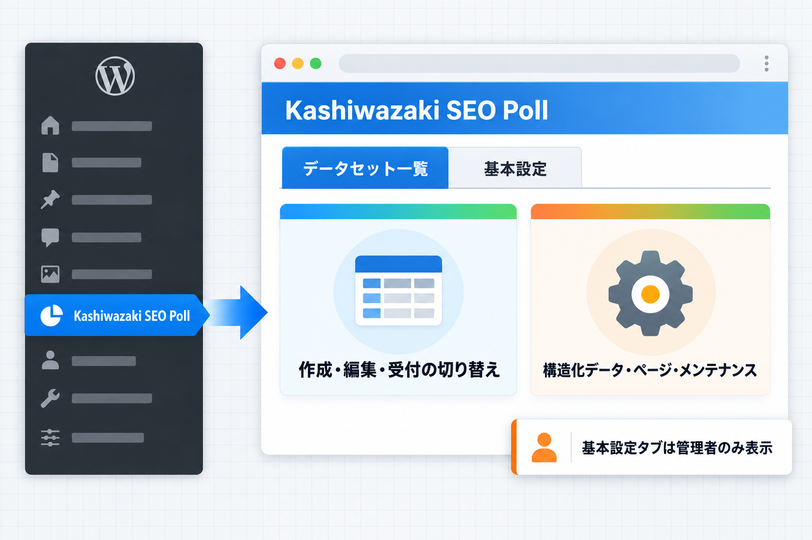
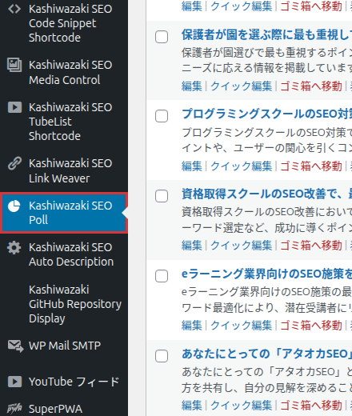
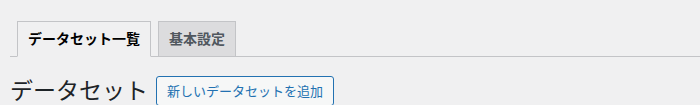
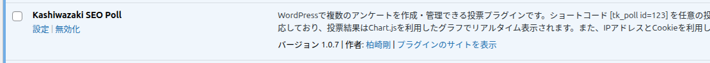

管理メニューとタブ
管理画面の左メニューには「Kashiwazaki SEO Poll」が1つだけ表示されます。データセットの一覧と基本設定は、同じメニューの中でタブを使って切り替えます。

左メニュー「Kashiwazaki SEO Poll」
円グラフのアイコンが付いた「Kashiwazaki SEO Poll」をクリックすると、データセット一覧が開きます。データセットの編集画面・新規追加画面・基本設定を開いている間も、このメニューが選択中（強調表示）になります。

| 項目 | 内容 |
|---|---|
| 表示される人 | 投稿を書ける権限を持つ人（通常は寄稿者以上） |
| クリックした先 | データセット一覧 |
| サブメニュー | 表示しません。新規追加は一覧画面のボタンから、基本設定はタブから開きます |
タブ「データセット一覧」「基本設定」
データセット一覧と基本設定の画面の上部に、2つのタブが表示されます。いま開いている画面のタブが白く強調されます。

| タブ | 押すと開く画面 | 表示される人 |
|---|---|---|
| データセット一覧 | データセットの一覧（データセット一覧） | 左メニューが見える人全員 |
| 基本設定 | 「Kashiwazaki SEO Poll 基本設定」（基本設定） | サイトの設定を変更できる人（通常は管理者）だけ |
タブが出ない画面
データセットの編集画面と新規追加画面にはタブを表示しません。一覧に戻るときは左メニューの「Kashiwazaki SEO Poll」を押してください。
管理者以外が基本設定を開いた場合
サイトの設定を変更できない人が基本設定の URL を直接開くと、WordPress 標準の「このページにアクセスする権限がありません。」が表示され、画面は開きません。
そのほかの入口
| 入口 | 開く画面 |
|---|---|
| プラグイン一覧の「設定」リンク | 基本設定 |
| 一覧画面の「新しいデータセットを追加」ボタン | 新規追加画面 |
| 管理バーの「+ 新規」→「データセット」 | 新規追加画面 |
| 編集画面の「データセットページを見る ↗」（公開中のみ） | サイト側のデータセット詳細ページ（新しいタブ） |

画面の名前の対応表
WordPress の画面に出る名前と、このマニュアルでの呼び方の対応です。
| 画面に出る名前 | このマニュアルでの呼び方 |
|---|---|
| データセット（一覧画面の見出し） | データセット一覧 |
| データセットを編集 | 編集画面 |
| 新しいデータセットを追加 | 新規追加画面 |
| Kashiwazaki SEO Poll 基本設定 | 基本設定 |